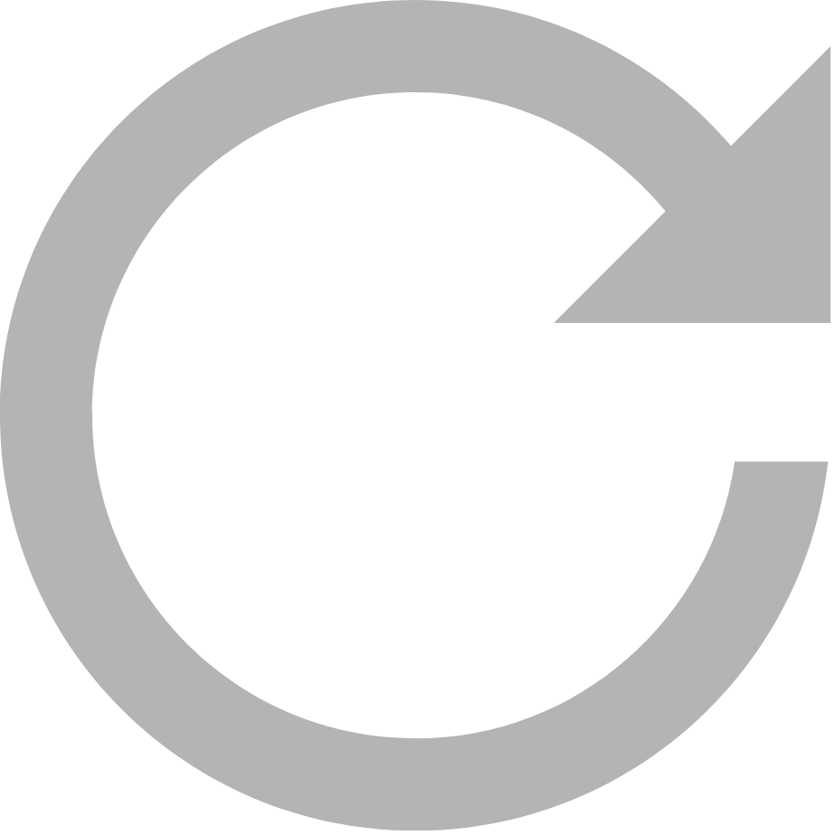

This is a space to pause, reflect, and reconnect with stillness.
In a world that rarely stops, we invite you to sit quietly with
yourself for one minute. Notice what arises in the silence.
Can your mind become still?
You may choose to record a short reflection about your experience.
This is entirely optional.
Read and sign the consent waiver or continue without recording.
Invitation to stillness.
If consent provided, you may record up to 3 minutes.